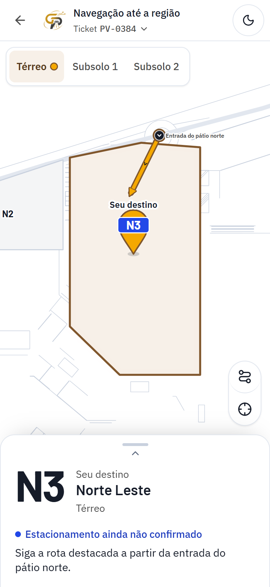
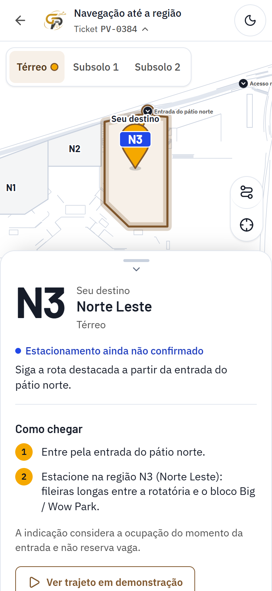
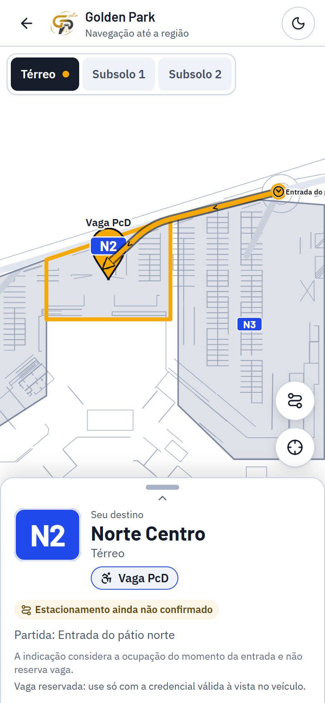
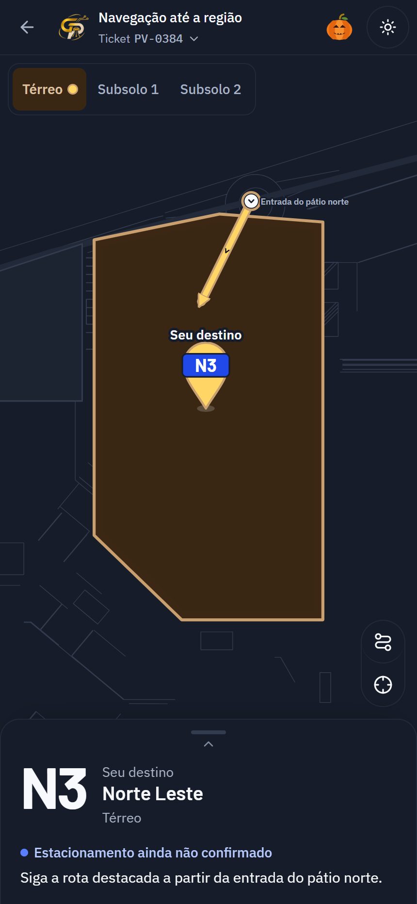
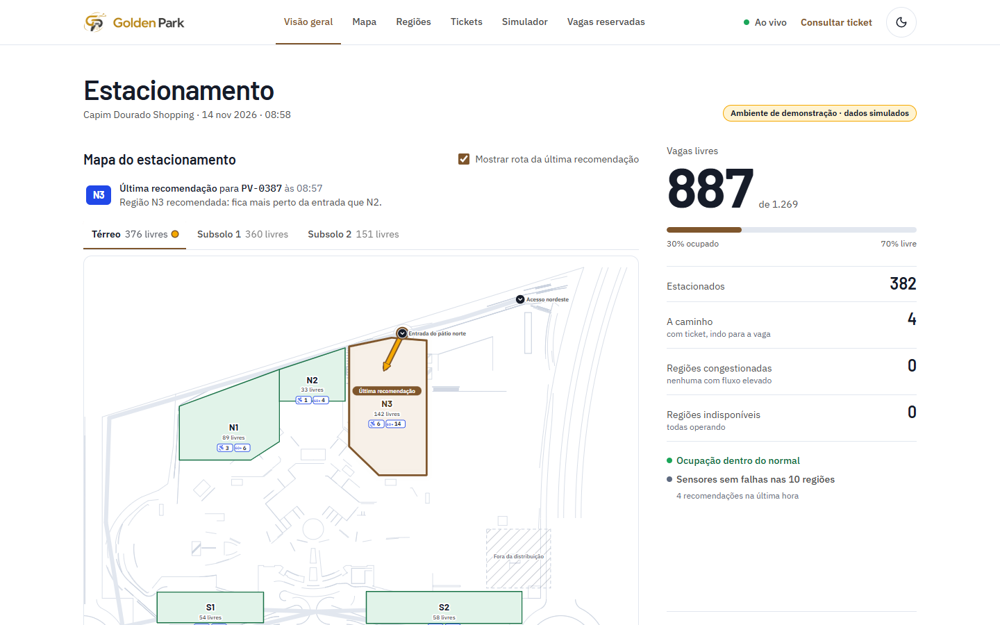
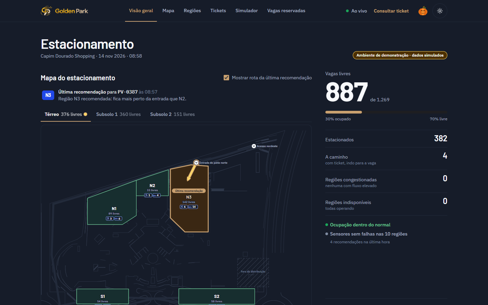
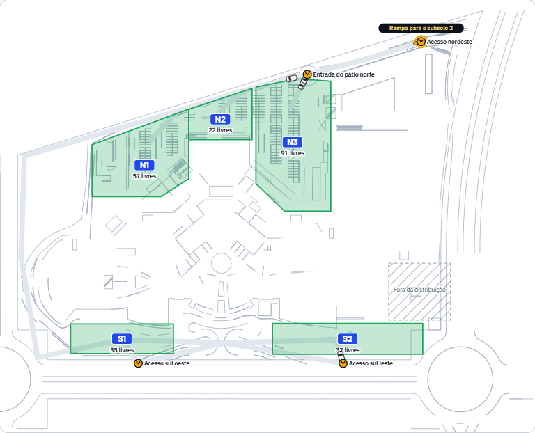
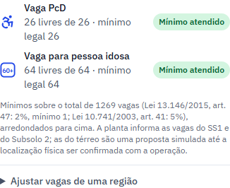
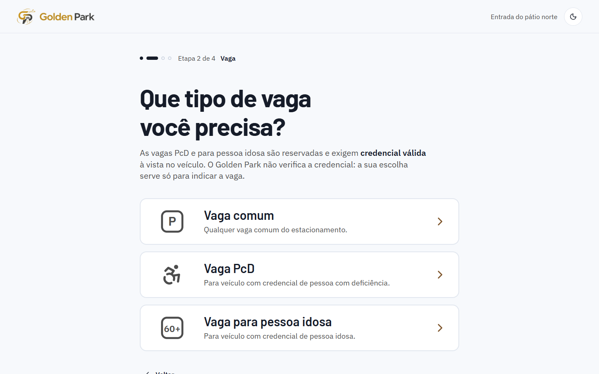
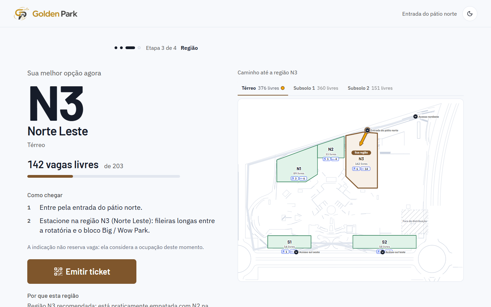

O estacionamento que indica a vaga certa
O Golden Park recomenda, na entrada, a melhor região do estacionamento do Capim Dourado Shopping para cada veículo e guia o motorista pelo celular, sem aplicativo. A operação acompanha tudo em tempo real.
Cliente: página do QR Code
O motorista escaneia o QR Code do ticket e o celular abre o mapa da planta real, com a rota pelos corredores até a região indicada. Depois de estacionar, o mesmo QR Code mostra onde o carro ficou.




- Sem GPS: a página mostra a região indicada (ou registrada) e o caminho pelas vias.
- Zoom com pinça, arrastar, centralizar no destino e ver a rota inteira.
- Atualiza sozinha quando o estacionamento é confirmado e quando o veículo sai.
Administração: painel da operação
Vagas livres em destaque, mapa com a ocupação de cada região, tabela de zonas com vagas comuns, PcD e para pessoa idosa, operação de tickets e o simulador, tudo atualizando em tempo real.




Totem de entrada


Simulação 3D do estacionamento
Maquete 3D interativa dos três níveis feita sobre a planta, a mesma exibida na aba "Simulação 3D" do painel. A movimentação é ilustrativa, gerada no navegador; posições dos subsolos e rampas são aproximadas.
Rodar o MVP completo
Com Node.js 22+, pnpm 10 e Docker Desktop aberto, cinco comandos sobem a API, o banco e as três telas. O passo a passo completo, com o resultado esperado de cada etapa, está em INSTRUCOES-DE-EXECUCAO.md.
git clone https://github.com/ElitondeSousa/golden-park.git && cd golden-park
pnpm install
cp .env.example apps/api/.env
pnpm demo:preparar
pnpm demo
- Totem: http://localhost:5173/totem?acesso=A_ROT
- Painel: http://localhost:5173/painel
- Cliente: o endereço do QR Code impresso no ticket (/t/…)